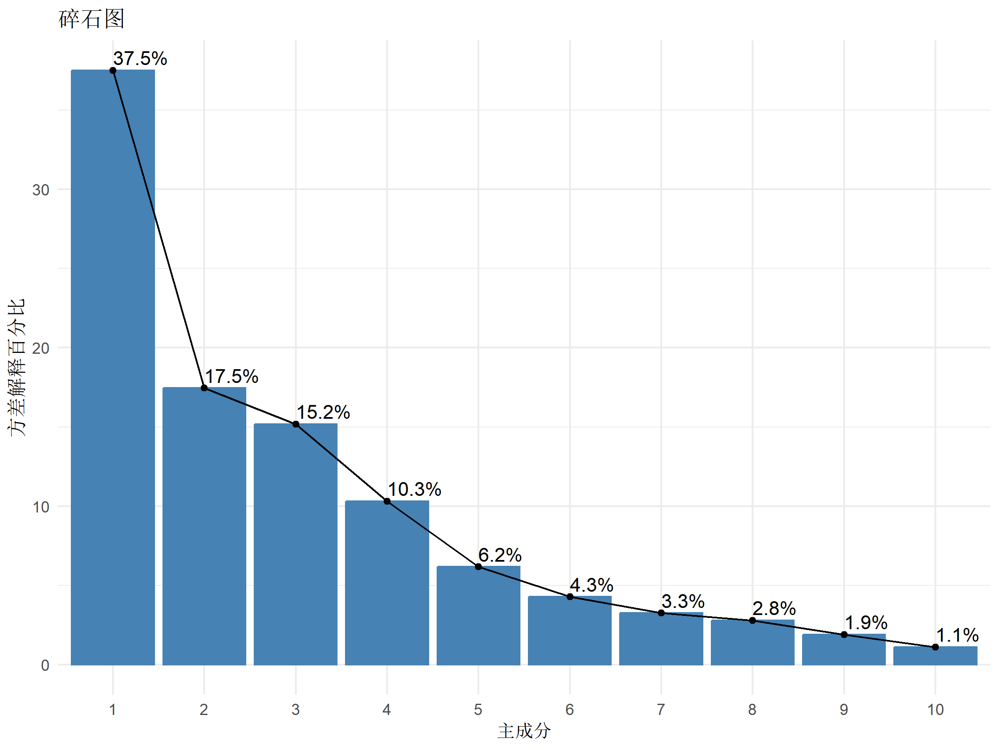
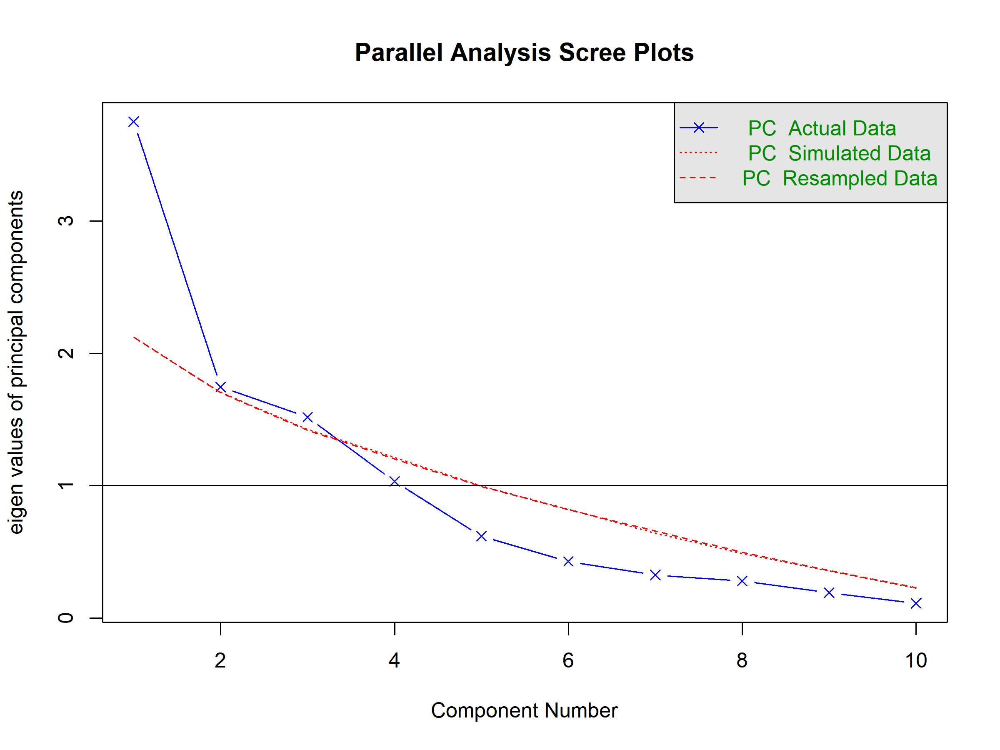
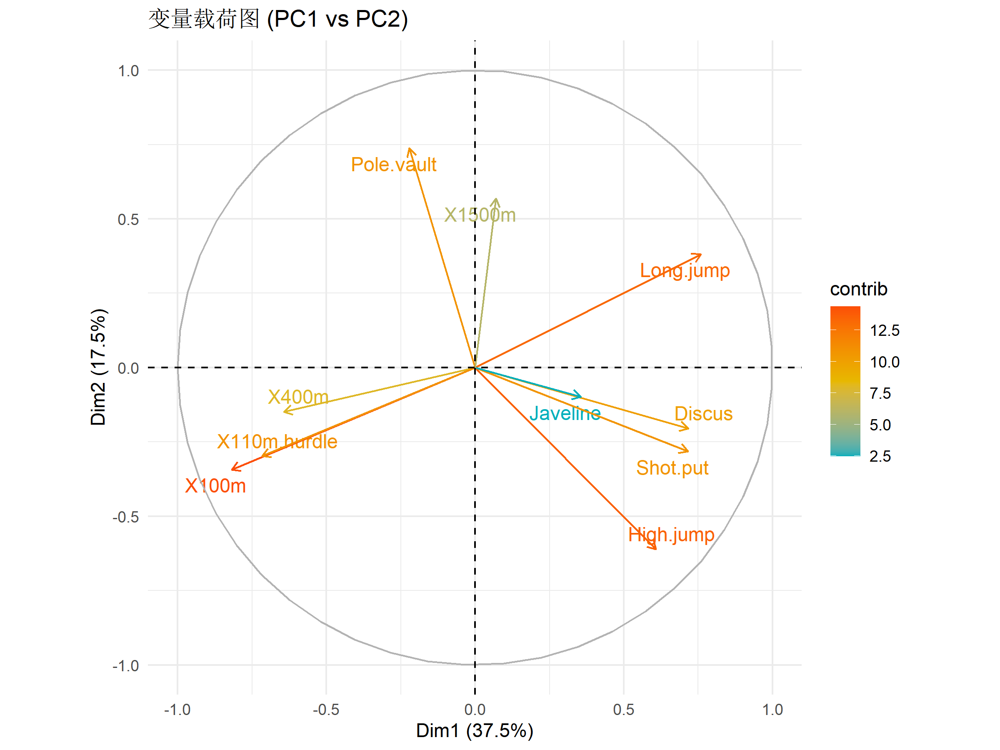
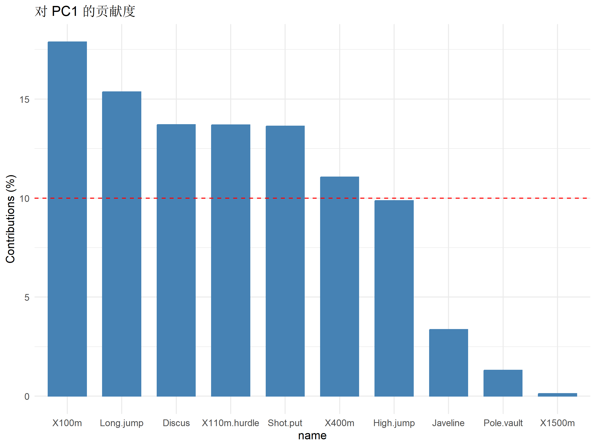
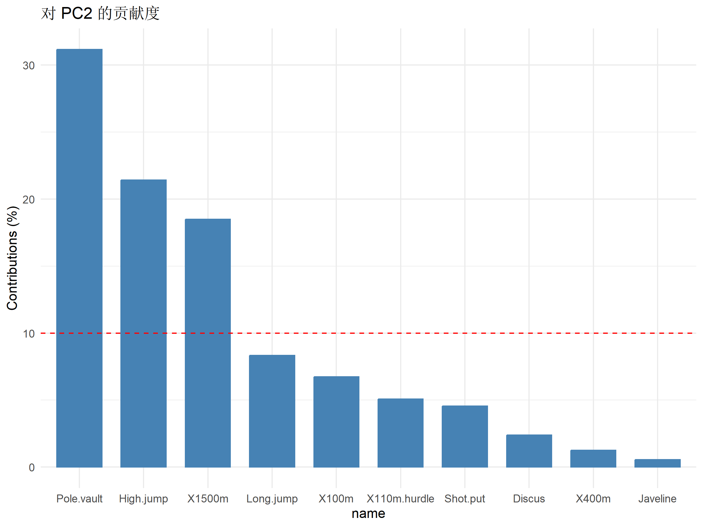
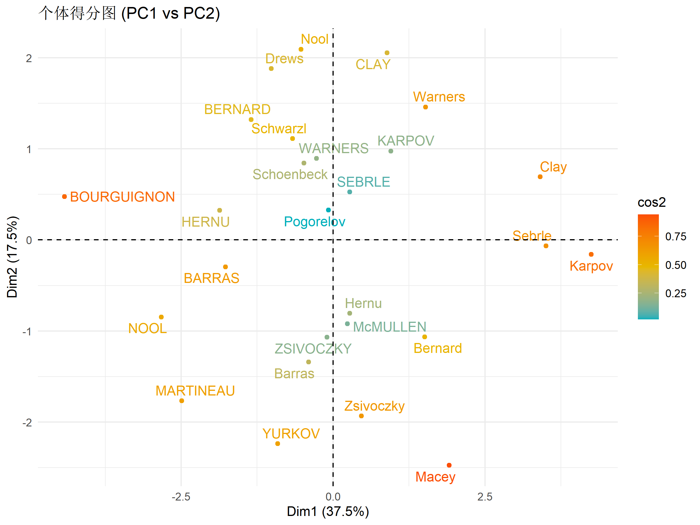
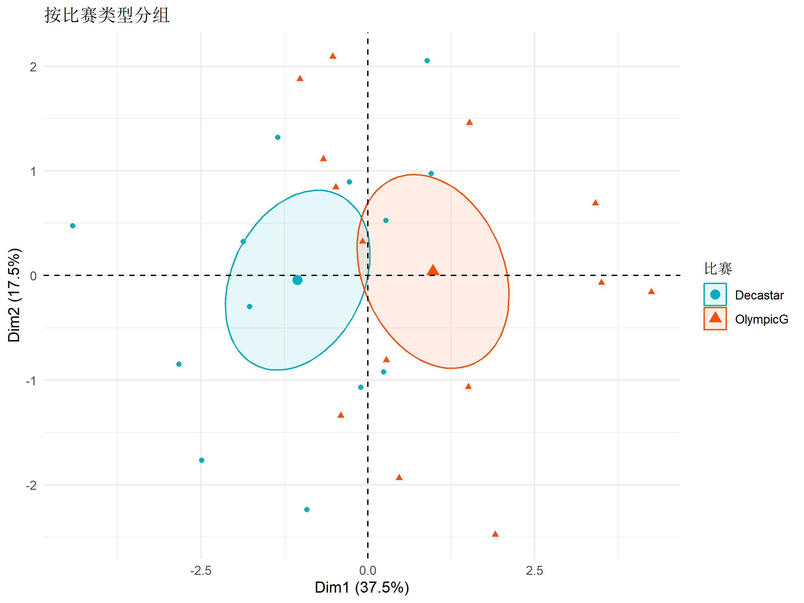
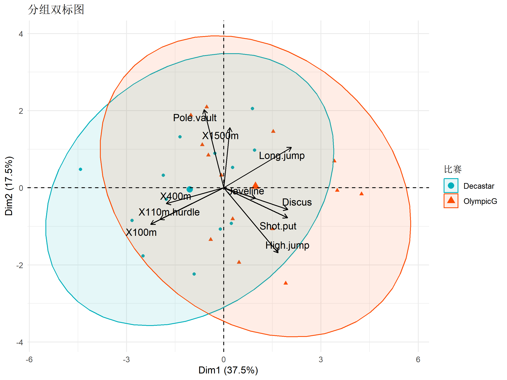
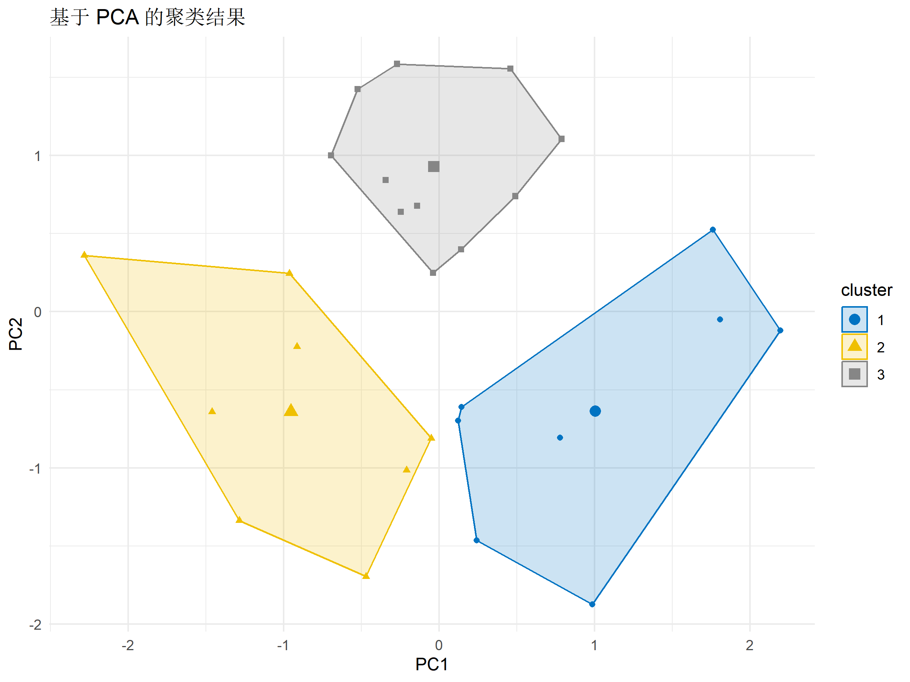

# install.packages("FactoMineR") # 高级PCA
# install.packages("factoextra") # PCA可视化
# install.packages("ggfortify") # ggplot2 扩展
library(FactoMineR)
library(factoextra)
library(ggplot2)
library(dplyr)主成分分析 (PCA) 完全指南
R包
统计模型
降维
使用 prcomp 和 FactoMineR 进行主成分分析，碎石图、载荷图、得分图可视化。
简介
主成分分析 (Principal Component Analysis, PCA) 是一种常用的降维和数据探索技术，通过线性变换将原始变量转换为一组不相关的新变量（主成分），按方差解释量排序。
PCA 的应用场景
- 降维：减少变量数量，保留主要信息
- 可视化：高维数据的二维/三维可视化
- 去除多重共线性：将相关变量转换为正交成分
- 特征提取：识别数据的主要变异模式
- 预处理：机器学习模型的输入特征降维
PCA vs 因子分析
| 特性 | PCA | 因子分析 |
|---|---|---|
| 目标 | 解释方差 | 解释相关 |
| 假设 | 无潜变量假设 | 假设存在潜变量 |
| 成分/因子 | 观测变量的线性组合 | 潜变量 |
| 适用 | 降维、探索 | 量表开发、结构发现 |
安装与加载
示例数据
使用 decathlon2 数据集（十项全能运动员成绩）。
data("decathlon2")
head(decathlon2) X100m Long.jump Shot.put High.jump X400m X110m.hurdle Discus
SEBRLE 11.04 7.58 14.83 2.07 49.81 14.69 43.75
CLAY 10.76 7.40 14.26 1.86 49.37 14.05 50.72
BERNARD 11.02 7.23 14.25 1.92 48.93 14.99 40.87
YURKOV 11.34 7.09 15.19 2.10 50.42 15.31 46.26
ZSIVOCZKY 11.13 7.30 13.48 2.01 48.62 14.17 45.67
McMULLEN 10.83 7.31 13.76 2.13 49.91 14.38 44.41
Pole.vault Javeline X1500m Rank Points Competition
SEBRLE 5.02 63.19 291.7 1 8217 Decastar
CLAY 4.92 60.15 301.5 2 8122 Decastar
BERNARD 5.32 62.77 280.1 4 8067 Decastar
YURKOV 4.72 63.44 276.4 5 8036 Decastar
ZSIVOCZKY 4.42 55.37 268.0 7 8004 Decastar
McMULLEN 4.42 56.37 285.1 8 7995 Decastar变量说明： - 10个运动项目成绩 + 总分排名 + 比赛类型
# 提取活动变量（10个运动项目）
active_vars <- decathlon2[, 1:10]
head(active_vars) X100m Long.jump Shot.put High.jump X400m X110m.hurdle Discus
SEBRLE 11.04 7.58 14.83 2.07 49.81 14.69 43.75
CLAY 10.76 7.40 14.26 1.86 49.37 14.05 50.72
BERNARD 11.02 7.23 14.25 1.92 48.93 14.99 40.87
YURKOV 11.34 7.09 15.19 2.10 50.42 15.31 46.26
ZSIVOCZKY 11.13 7.30 13.48 2.01 48.62 14.17 45.67
McMULLEN 10.83 7.31 13.76 2.13 49.91 14.38 44.41
Pole.vault Javeline X1500m
SEBRLE 5.02 63.19 291.7
CLAY 4.92 60.15 301.5
BERNARD 5.32 62.77 280.1
YURKOV 4.72 63.44 276.4
ZSIVOCZKY 4.42 55.37 268.0
McMULLEN 4.42 56.37 285.1数据预处理
检查数据
# 描述统计
summary(active_vars) X100m Long.jump Shot.put High.jump
Min. :10.44 Min. :6.800 Min. :12.68 Min. :1.860
1st Qu.:10.84 1st Qu.:7.210 1st Qu.:14.17 1st Qu.:1.930
Median :10.97 Median :7.310 Median :14.57 Median :1.980
Mean :10.99 Mean :7.365 Mean :14.54 Mean :1.998
3rd Qu.:11.13 3rd Qu.:7.545 3rd Qu.:15.01 3rd Qu.:2.080
Max. :11.64 Max. :7.960 Max. :16.36 Max. :2.150
X400m X110m.hurdle Discus Pole.vault
Min. :46.81 Min. :13.97 Min. :37.92 Min. :4.400
1st Qu.:48.70 1st Qu.:14.15 1st Qu.:42.27 1st Qu.:4.660
Median :49.20 Median :14.34 Median :44.72 Median :4.900
Mean :49.31 Mean :14.50 Mean :44.85 Mean :4.836
3rd Qu.:49.86 3rd Qu.:14.87 3rd Qu.:46.93 3rd Qu.:5.000
Max. :51.16 Max. :15.67 Max. :51.65 Max. :5.400
Javeline X1500m
Min. :50.31 Min. :262.1
1st Qu.:55.32 1st Qu.:271.6
Median :57.19 Median :278.1
Mean :58.32 Mean :278.5
3rd Qu.:62.05 3rd Qu.:283.6
Max. :70.52 Max. :301.5 # 检查缺失值
sum(is.na(active_vars))[1] 0标准化
PCA 对数据尺度敏感，不同量纲的变量需要标准化。
# 手动标准化
scaled_data <- scale(active_vars)
# 或在 PCA 函数中设置 scale = TRUE基础 PCA (prcomp)
执行 PCA
# 使用 prcomp 进行 PCA
pca_result <- prcomp(active_vars, scale. = TRUE)
# 查看结果结构
names(pca_result)[1] "sdev" "rotation" "center" "scale" "x" 输出解释： - sdev: 各主成分的标准差 - rotation: 载荷矩阵（变量与主成分的关系） - x: 主成分得分（个体在各主成分上的值） - center: 中心化值 - scale: 标准化值
方差解释
# 方差和方差比例
summary(pca_result)Importance of components:
PC1 PC2 PC3 PC4 PC5 PC6 PC7
Standard deviation 1.936 1.3210 1.2320 1.0160 0.78603 0.65444 0.57089
Proportion of Variance 0.375 0.1745 0.1518 0.1032 0.06178 0.04283 0.03259
Cumulative Proportion 0.375 0.5495 0.7013 0.8045 0.86630 0.90913 0.94172
PC8 PC9 PC10
Standard deviation 0.52857 0.43716 0.33511
Proportion of Variance 0.02794 0.01911 0.01123
Cumulative Proportion 0.96966 0.98877 1.00000提取方差信息
# 计算方差解释
var_explained <- pca_result$sdev^2
var_percent <- var_explained / sum(var_explained) * 100
cumsum_percent <- cumsum(var_percent)
data.frame(
PC = paste0("PC", 1:length(var_explained)),
Variance = round(var_explained, 3),
Percent = round(var_percent, 2),
Cumulative = round(cumsum_percent, 2)
) PC Variance Percent Cumulative
1 PC1 3.750 37.50 37.50
2 PC2 1.745 17.45 54.95
3 PC3 1.518 15.18 70.13
4 PC4 1.032 10.32 80.45
5 PC5 0.618 6.18 86.63
6 PC6 0.428 4.28 90.91
7 PC7 0.326 3.26 94.17
8 PC8 0.279 2.79 96.97
9 PC9 0.191 1.91 98.88
10 PC10 0.112 1.12 100.00确定主成分数量
方法1：碎石图 (Scree Plot)
# 使用 factoextra 绑制
fviz_screeplot(pca_result, addlabels = TRUE) +
labs(title = "碎石图", x = "主成分", y = "方差解释百分比") +
theme_minimal()
解释：找到曲线的”拐点”，通常选择拐点之前的成分。
方法2：累积解释 > 80%
# 累积方差达到 80% 的成分数
which(cumsum_percent >= 80)[1][1] 4方法3：特征值 > 1 (Kaiser 准则)
# 特征值 > 1
sum(var_explained > 1)[1] 4方法4：平行分析
library(psych)
fa.parallel(active_vars, fa = "pc", n.iter = 100)
Parallel analysis suggests that the number of factors = NA and the number of components = 1 载荷解读
载荷矩阵
# 查看载荷
loadings <- pca_result$rotation
print(round(loadings[, 1:4], 3)) PC1 PC2 PC3 PC4
X100m -0.423 -0.259 0.082 0.100
Long.jump 0.392 0.289 -0.005 -0.183
Shot.put 0.369 -0.214 0.385 0.036
High.jump 0.314 -0.463 0.004 0.070
X400m -0.332 -0.112 0.419 0.266
X110m.hurdle -0.370 -0.225 0.338 -0.157
Discus 0.370 -0.155 0.219 0.391
Pole.vault -0.114 0.558 0.327 -0.248
Javeline 0.183 -0.075 0.564 -0.478
X1500m 0.036 0.430 0.286 0.642解释： - 载荷表示原始变量与主成分的相关程度 - 载荷的符号表示方向 - 载荷的绝对值越大，变量对该成分的贡献越大
载荷可视化
# 使用 factoextra
fviz_pca_var(pca_result,
col.var = "contrib", # 按贡献度着色
gradient.cols = c("#00AFBB", "#E7B800", "#FC4E07"),
repel = TRUE
) +
labs(title = "变量载荷图 (PC1 vs PC2)") +
theme_minimal()
变量贡献度
# 各变量对 PC1 和 PC2 的贡献
fviz_contrib(pca_result, choice = "var", axes = 1, top = 10) +
labs(title = "对 PC1 的贡献度") +
theme_minimal()
fviz_contrib(pca_result, choice = "var", axes = 2, top = 10) +
labs(title = "对 PC2 的贡献度") +
theme_minimal()
得分解读
个体得分
# 查看主成分得分
scores <- pca_result$x
head(scores[, 1:4]) PC1 PC2 PC3 PC4
SEBRLE 0.2727622 0.5264068 1.5556058 0.10384438
CLAY 0.8879389 2.0551314 0.8249697 1.81612193
BERNARD -1.3466138 1.3229149 0.9439501 -1.46516144
YURKOV -0.9108536 -2.2390912 1.9063730 0.09501304
ZSIVOCZKY -0.1018764 -1.0694498 -2.0596722 0.07056229
McMULLEN 0.2353742 -0.9215376 -0.8028425 1.17942532得分可视化
# 使用 factoextra
fviz_pca_ind(pca_result,
col.ind = "cos2", # 按表示质量着色
gradient.cols = c("#00AFBB", "#E7B800", "#FC4E07"),
repel = TRUE
) +
labs(title = "个体得分图 (PC1 vs PC2)") +
theme_minimal()
按组别着色
# 添加比赛类型作为分组
fviz_pca_ind(pca_result,
geom.ind = "point",
col.ind = decathlon2$Competition,
palette = c("#00AFBB", "#FC4E07"),
addEllipses = TRUE,
ellipse.type = "confidence",
legend.title = "比赛"
) +
labs(title = "按比赛类型分组") +
theme_minimal()
双标图 (Biplot)
双标图同时展示变量和个体。
fviz_pca_biplot(pca_result,
col.var = "#2E9FDF", # 变量颜色
col.ind = "#696969", # 个体颜色
repel = TRUE
) +
labs(title = "PCA 双标图") +
theme_minimal()
分组双标图
fviz_pca_biplot(pca_result,
col.ind = decathlon2$Competition,
palette = c("#00AFBB", "#FC4E07"),
addEllipses = TRUE,
label = "var",
col.var = "black",
repel = TRUE,
legend.title = "比赛"
) +
labs(title = "分组双标图") +
theme_minimal()
高级 PCA (FactoMineR)
FactoMineR 提供更丰富的 PCA 功能。
# 使用 PCA 函数
pca_fm <- PCA(decathlon2,
quanti.sup = 11:12, # 补充定量变量
quali.sup = 13, # 补充定性变量
graph = FALSE
)
# 查看结果
summary(pca_fm)
Call:
PCA(X = decathlon2, quanti.sup = 11:12, quali.sup = 13, graph = FALSE)
Eigenvalues
Dim.1 Dim.2 Dim.3 Dim.4 Dim.5 Dim.6 Dim.7
Variance 3.750 1.745 1.518 1.032 0.618 0.428 0.326
% of var. 37.500 17.452 15.178 10.322 6.178 4.283 3.259
Cumulative % of var. 37.500 54.951 70.130 80.452 86.630 90.913 94.172
Dim.8 Dim.9 Dim.10
Variance 0.279 0.191 0.112
% of var. 2.794 1.911 1.123
Cumulative % of var. 96.966 98.877 100.000
Individuals (the 10 first)
Dist Dim.1 ctr cos2 Dim.2 ctr cos2 Dim.3
SEBRLE | 2.236 | 0.278 0.076 0.015 | -0.536 0.611 0.058 | 1.585
CLAY | 3.534 | 0.905 0.809 0.066 | -2.094 9.308 0.351 | 0.841
BERNARD | 2.848 | -1.372 1.860 0.232 | -1.348 3.857 0.224 | 0.962
YURKOV | 3.187 | -0.928 0.851 0.085 | 2.282 11.049 0.513 | 1.943
ZSIVOCZKY | 2.673 | -0.104 0.011 0.002 | 1.090 2.521 0.166 | -2.099
McMULLEN | 2.638 | 0.240 0.057 0.008 | 0.939 1.872 0.127 | -0.818
MARTINEAU | 3.988 | -2.537 6.358 0.405 | 1.801 6.884 0.204 | 0.052
HERNU | 3.160 | -1.903 3.576 0.363 | -0.330 0.232 0.011 | 1.289
BARRAS | 2.297 | -1.806 3.220 0.618 | 0.303 0.194 0.017 | -0.593
NOOL | 4.018 | -2.882 8.202 0.514 | 0.864 1.584 0.046 | -1.402
ctr cos2
SEBRLE 6.132 0.502 |
CLAY 1.725 0.057 |
BERNARD 2.258 0.114 |
YURKOV 9.209 0.372 |
ZSIVOCZKY 10.750 0.617 |
McMULLEN 1.633 0.096 |
MARTINEAU 0.007 0.000 |
HERNU 4.052 0.166 |
BARRAS 0.858 0.067 |
NOOL 4.799 0.122 |
Variables
Dim.1 ctr cos2 Dim.2 ctr cos2 Dim.3 ctr
X100m | -0.819 17.885 0.671 | 0.343 6.733 0.117 | 0.101 0.670
Long.jump | 0.759 15.358 0.576 | -0.381 8.339 0.146 | -0.006 0.003
Shot.put | 0.715 13.636 0.511 | 0.282 4.561 0.080 | 0.474 14.793
High.jump | 0.608 9.874 0.370 | 0.611 21.417 0.374 | 0.005 0.001
X400m | -0.644 11.054 0.415 | 0.148 1.262 0.022 | 0.516 17.526
X110m.hurdle | -0.716 13.687 0.513 | 0.298 5.073 0.089 | 0.416 11.426
Discus | 0.717 13.705 0.514 | 0.204 2.394 0.042 | 0.270 4.814
Pole.vault | -0.221 1.307 0.049 | -0.738 31.170 0.544 | 0.403 10.705
Javeline | 0.355 3.364 0.126 | 0.099 0.556 0.010 | 0.695 31.863
X1500m | 0.070 0.130 0.005 | -0.568 18.494 0.323 | 0.353 8.198
cos2
X100m 0.010 |
Long.jump 0.000 |
Shot.put 0.225 |
High.jump 0.000 |
X400m 0.266 |
X110m.hurdle 0.173 |
Discus 0.073 |
Pole.vault 0.162 |
Javeline 0.484 |
X1500m 0.124 |
Supplementary continuous variables
Dim.1 cos2 Dim.2 cos2 Dim.3 cos2
Rank | -0.646 0.417 | -0.024 0.001 | -0.364 0.132 |
Points | 0.947 0.897 | -0.014 0.000 | 0.156 0.024 |
Supplementary categories
Dist Dim.1 cos2 v.test Dim.2 cos2 v.test Dim.3
Decastar | 1.207 | -1.071 0.788 -2.718 | 0.044 0.001 0.165 | 0.082
OlympicG | 1.120 | 0.995 0.788 2.718 | -0.041 0.001 -0.165 | -0.076
cos2 v.test
Decastar 0.005 0.328 |
OlympicG 0.005 -0.328 |变量结果
# 变量坐标、贡献、表示质量
var_result <- get_pca_var(pca_fm)
print(var_result$coord[, 1:3]) # 坐标 Dim.1 Dim.2 Dim.3
X100m -0.81895206 0.3427787 0.100864539
Long.jump 0.75889854 -0.3814931 -0.006261254
Shot.put 0.71507829 0.2821167 0.473854591
High.jump 0.60849326 0.6113542 0.004605966
X400m -0.64384815 0.1484225 0.515759382
X110m.hurdle -0.71642027 0.2975519 0.416451017
Discus 0.71688812 0.2043979 0.270322202
Pole.vault -0.22141731 -0.7375479 0.403083623
Javeline 0.35517566 0.0985309 0.695433666
X1500m 0.06971223 -0.5681197 0.352757755# 表示质量 (cos2)
print(round(var_result$cos2[, 1:3], 3)) Dim.1 Dim.2 Dim.3
X100m 0.671 0.117 0.010
Long.jump 0.576 0.146 0.000
Shot.put 0.511 0.080 0.225
High.jump 0.370 0.374 0.000
X400m 0.415 0.022 0.266
X110m.hurdle 0.513 0.089 0.173
Discus 0.514 0.042 0.073
Pole.vault 0.049 0.544 0.162
Javeline 0.126 0.010 0.484
X1500m 0.005 0.323 0.124个体结果
# 个体坐标和贡献
ind_result <- get_pca_ind(pca_fm)
head(ind_result$coord[, 1:3]) Dim.1 Dim.2 Dim.3
SEBRLE 0.2779582 -0.5364345 1.5852390
CLAY 0.9048536 -2.0942803 0.8406848
BERNARD -1.3722659 -1.3481155 0.9619317
YURKOV -0.9282048 2.2817444 1.9426881
ZSIVOCZKY -0.1038171 1.0898221 -2.0989076
McMULLEN 0.2398580 0.9390923 -0.81813623D PCA 可视化
# 使用 plotly 进行 3D 可视化
# install.packages("plotly")
library(plotly)
# 准备数据
plot_data <- data.frame(
PC1 = pca_result$x[, 1],
PC2 = pca_result$x[, 2],
PC3 = pca_result$x[, 3],
Name = rownames(pca_result$x),
Competition = decathlon2$Competition
)
# 3D 散点图
plot_ly(plot_data,
x = ~PC1, y = ~PC2, z = ~PC3,
color = ~Competition,
text = ~Name,
type = "scatter3d",
mode = "markers"
) %>%
layout(title = "3D PCA 可视化")PCA 用于降维
用于回归
# 使用前几个主成分作为预测变量
# 示例：预测总分
decathlon2$Points <- as.numeric(decathlon2$Points)
# 添加 PC 得分
pca_scores <- as.data.frame(pca_result$x)
data_with_pc <- cbind(pca_scores, Points = decathlon2$Points)
# 使用前 4 个 PC 进行回归
model_pc <- lm(Points ~ PC1 + PC2 + PC3 + PC4, data = data_with_pc)
summary(model_pc)
Call:
lm(formula = Points ~ PC1 + PC2 + PC3 + PC4, data = data_with_pc)
Residuals:
Min 1Q Median 3Q Max
-66.026 -29.952 -0.934 20.908 135.163
Coefficients:
Estimate Std. Error t value Pr(>|t|)
(Intercept) 8118.963 9.208 881.764 < 2e-16 ***
PC1 167.444 4.845 34.557 < 2e-16 ***
PC2 3.705 7.103 0.522 0.607
PC3 43.293 7.616 5.684 1.02e-05 ***
PC4 -84.054 9.236 -9.101 6.51e-09 ***
---
Signif. codes: 0 '***' 0.001 '**' 0.01 '*' 0.05 '.' 0.1 ' ' 1
Residual standard error: 47.84 on 22 degrees of freedom
Multiple R-squared: 0.9835, Adjusted R-squared: 0.9805
F-statistic: 327.4 on 4 and 22 DF, p-value: < 2.2e-16用于聚类
# 使用 PC 得分进行聚类
set.seed(42)
clusters <- kmeans(pca_result$x[, 1:2], centers = 3)
# 可视化
fviz_cluster(list(data = pca_result$x[, 1:2], cluster = clusters$cluster),
geom = "point",
ellipse.type = "convex",
palette = "jco"
) +
labs(title = "基于 PCA 的聚类结果") +
theme_minimal()
特殊情况处理
缺失值处理
# 使用 missMDA 包处理缺失值
# install.packages("missMDA")
# library(missMDA)
# 估计缺失值
# completed_data <- imputePCA(data_with_na, ncp = 2)$completeObs稀疏 PCA
对于高维数据，可以使用稀疏 PCA。
# install.packages("elasticnet")
# library(elasticnet)
#
# sparse_pca <- spca(scale(active_vars), K = 4, type = "predictor",
# sparse = "varnum", para = c(5, 5, 5, 5))结果报告
学术报告模板
## PCA 结果
对 10 个运动项目成绩进行主成分分析。结果显示，
前 4 个主成分解释了总方差的 80.5 %。
### 主成分解释
- PC1 ( 37.5 %): 主要反映整体运动能力
- PC2 ( 17.5 %): 区分速度型和力量型运动员
- PC3 ( 15.2 %): ...
- PC4 ( 10.3 %): ...
### 变量载荷
各变量在主成分上的载荷见表 X。导出结果
# 导出载荷矩阵
write.csv(pca_result$rotation, "pca_loadings.csv")
# 导出得分
write.csv(pca_result$x, "pca_scores.csv")
# 保存图片
p <- fviz_pca_biplot(pca_result, repel = TRUE)
ggsave("pca_biplot.pdf", p, width = 10, height = 8)最佳实践
检查清单
常见错误
| 错误 | 解决方案 |
|---|---|
| 未标准化 | 设置 scale = TRUE |
| 成分数选择不当 | 使用多种准则综合判断 |
| 过度解释 | 只解释载荷 > 0.4 的变量 |
| 忽略表示质量 | 检查 cos2 值 |
总结
| 任务 | 推荐工具 |
|---|---|
| 快速 PCA | prcomp() |
| 丰富输出 | FactoMineR::PCA() |
| 可视化 | factoextra |
| 3D 展示 | plotly |
[!TIP] 最佳实践： 1. 标准化数据后再进行 PCA 2. 综合多种方法确定主成分数 3. 解释主成分时关注高载荷变量 4. 使用双标图展示变量和个体关系
参考文献
- Jolliffe, I. T. (2002). Principal Component Analysis (2nd ed.). Springer.
- Husson, F., Lê, S., & Pagès, J. (2017). Exploratory Multivariate Analysis by Example Using R. CRC Press.
- Kassambara, A. (2017). Practical Guide to Principal Component Methods in R. STHDA.